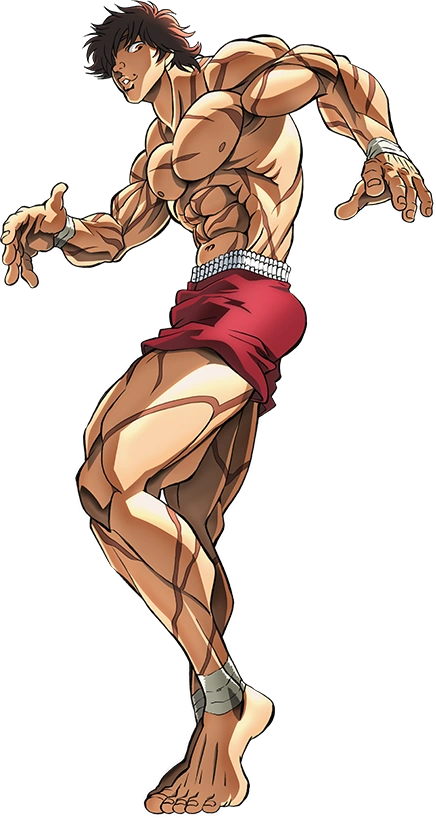
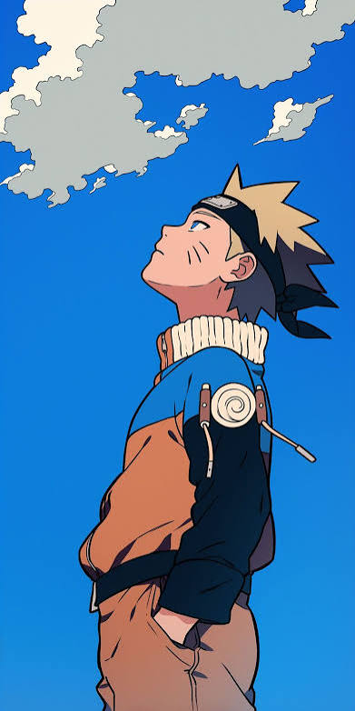
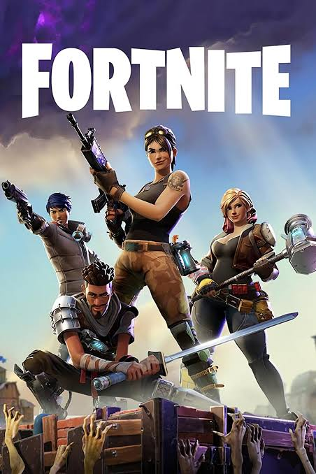

Sobre mí
¡Hola! Soy Pedro, aunque todos me dicen Drope. Vivo en Saltillo, Coahuila, y estudio dos carreras: Desarrollo de Software y Gastronomía. Además trabajo desarrollando aplicaciones web, así que paso buena parte del día entre código y proyectos.
Me considero una persona disciplinada y curiosa: me gusta aprender cosas nuevas, ponerme retos y mejorar cada día, ya sea frente a la computadora, en la cocina o en el gimnasio.
Estudios
- Desarrollo de Software – Universidad Tecnológica de Coahuila (UTC)
- Gastronomía – Universidad Vizcaya de las Américas, Campus Saltillo
Habilidades
- HTML y CSS
- ColdFusion y MySQL
- Git y GitHub
Intereses
🏋️ Gimnasio
Entrenar es parte de mi rutina. Me gusta seguir un plan, ver mi progreso y mantenerme constante; el gym me ayuda a despejarme y a ser disciplinado en todo lo demás.


🍥 Anime
Soy fan del anime. Mis favoritos son Baki, por sus peleas intensas y la obsesión de sus personajes por ser cada vez más fuertes, y Naruto, por su historia de esfuerzo y de nunca rendirse.

🎮 Videojuegos
En mi tiempo libre me gusta jugar, sobre todo FC 27 para echar partidas de fútbol y Fortnite para jugar con amigos.
Contacto
Correo: 24040122@alumno.utc.edu.mx